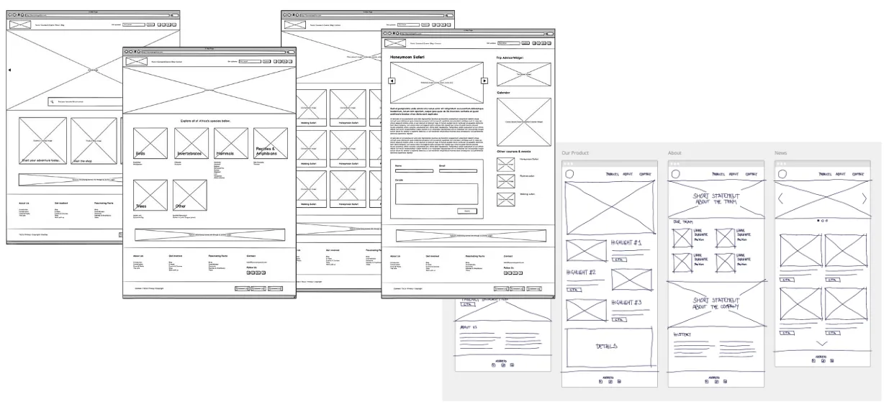
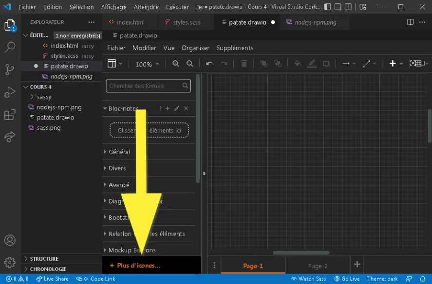
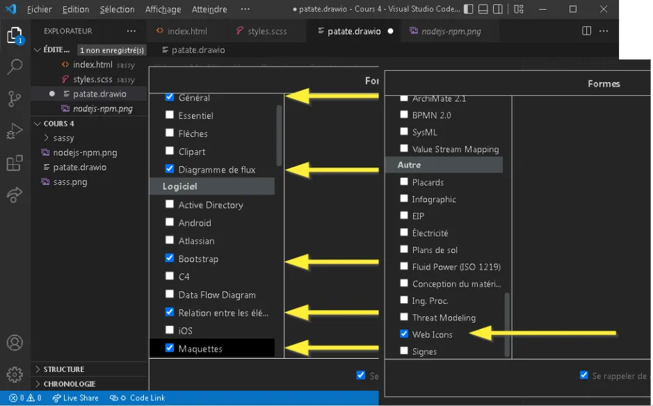
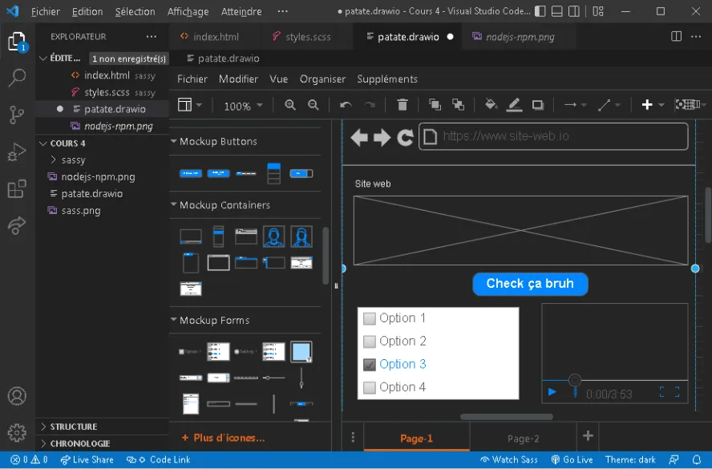
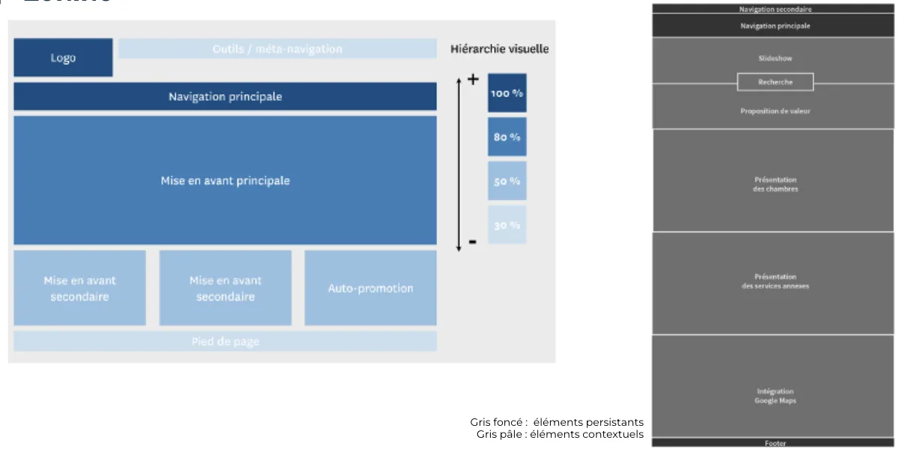

Maquette filaire
Zoning
Vidéo explicative
Maquette filaire + Draw.io



Tout comme un plan architectural, une structure filaire est un contour squelettique en deux dimensions d'une page Web ou d'une application.
Elles fournissent un aperçu clair de la structure de la page, de la mise en page, de l'architecture de l'information, du flux d'utilisateurs , des fonctionnalités et des comportements attendus.
Comme un wireframe représente généralement le concept initial du produit, le style, la couleur et les graphiques sont réduits au minimum.
Le zoning est une technique de squelette qui permet d'organiser le contenu d'une page web en la divisant en différentes zones.
